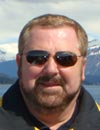

International Scientific Programme Committee and Keynote Speaker of the SFRR Europe Award Lecture
Kelvin J. A. Davies
Kelvin J. A. Davies, Ph.D., D.Sc. is the James E. Birren Chair of Gerontology and former Associate Dean in the University of Southern California’s School of Gerontology. He is also Professor of Molecular and Computational Biology in USC’s College of Letters, Arts, and Sciences.
Professor Davies was born and raised in London, England and is a dual citizen of Great Britain and the U.S.A. Educated at London and Liverpool Universities, the University of Wisconsin, and the University of California at Berkeley, he was previously a faculty member at Harvard University and Harvard Medical School. Before moving to USC in 1996, Professor Davies was Chairman of the Department of Biochemistry & Molecular Biology at the Albany Medical College, where he was also professor of Molecular Medicine.
Deeply involved in research into oxidative stress and free radicals, Professor Davies is the (founding) Editor-in-Chief of the premier scientific journal in the field, Free Radical Biology & Medicine. Professor Davies is a Fellow of the Society for Free Radical Biology & Medicine; a Fellow of the Gerontological Society of America; a Fellow of the American Association for the Advancement of Science; winner of the Harwood S. Belding award of the American Physiological Society; and holder of various medals, some five honorary degrees, and fellowships from several universities and scientific societies. In 1996, he was named the National Parkinson Foundation Scholar. In 2006 he was awarded the Lifetime Scientific Achievement Award of the Society for Free Radical Biology & Medicine. In 2007 he was the Presidential Lecturer of the American College of Sports Medicine. In 2009 he was the William A. Pryor Annual Lecturer and Prize winner at the Louisiana State University. He is winner of the Faculty Research & Innovation award of the University of Southern California, and for both 2010 and 2011 has received USC’s Mentoring award. Professor Davies is past President of the Oxygen Club of California, the Society for Free Radical Biology & Medicine, and the International Society for Free Radical Research. The organizer of over 20 scientific meetings and conferences, he has been chairman of both the Oxygen Radicals in Biology Gordon Conference and the Oxidative Stress and Disease Gordon Conference, as well as chair of the 1990 SFRRI 5th Biennial meeting in Pasadena, and the 1993 SFRBM 1st annual meeting in Charleston.
Professor Davies' research centers on the role of free radicals and oxidative stress in biology. In particular he is interested in enzymes that catalyze the repair or removal of oxidatively damaged proteins and DNA, and in genes that allow adaptive responses to oxidative stress. The decline of such protective and adaptive responses in Ageing is a major interest of his laboratory. The Davies laboratory is involved in biochemical, molecular biology, and genetic studies of both normal aging processes, and aging pathologies such as Parkinson, Alzheimer, and Huntington diseases. Recent work on the degradation of oxidized proteins by the Davies lab. has shown that both the Proteasome and the mitochondrial Lon protease undergo large increases in expression during adaptation to oxidative stress. These adaptive responses are controlled by oxidant-sensitive signal transduction pathways that seem to decline in sensitivity with age; thus, aging cells are much less able to mount successful (protective) adaptive responses to oxidative stress. One of the adaptive response genes discovered in the Davies lab. in the 1990’s, called RCAN1 for Regulator of Calcineurin 1, has now been shown to be a Janus Gene; that is to say that transient expression can assist in acute adaptation to stress, but chronic overexpression or underexpression is associated with disease.
The Davies lab. has now shown that many forms of stress, even including psycho-social/emotional stress, will cause chronic overexpression of RCAN1 proteins. In turn, overexpression of RCAN1 proteins is associated with Alzheimer disease and Down syndrome. In contrast, chronic underexpression of RCAN1 proteins is associated with Huntington disease.
« Go Back